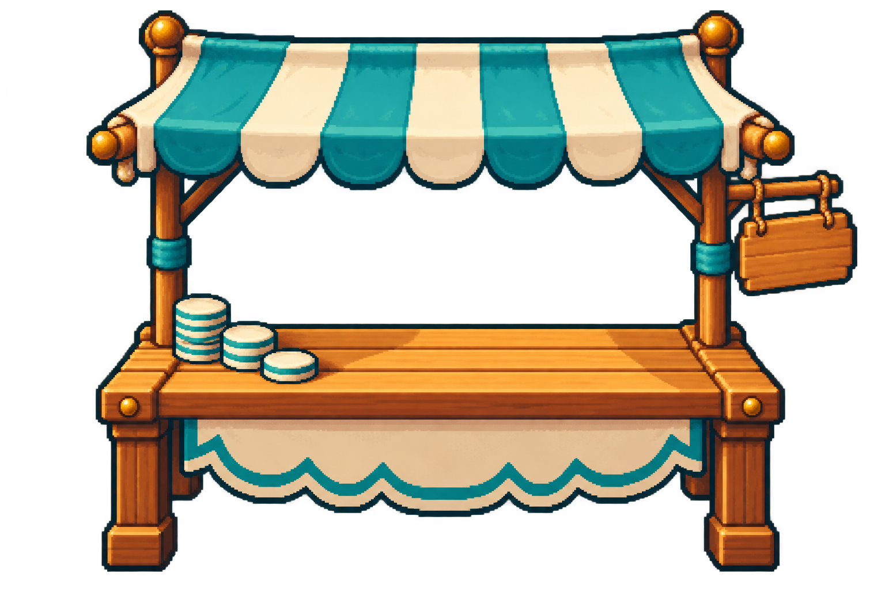

<!doctype html><html lang="es"><meta charset="utf-8"><meta name="viewport" content="width=device-width,initial-scale=1"><title>La feria de los datos · Amautai</title><style>
*{box-sizing:border-box}body{margin:0;background:#f8f3e7;color:#163f35;font:16px system-ui}main{max-width:1120px;margin:auto;padding:28px}header{display:flex;justify-content:space-between;align-items:center;gap:16px;flex-wrap:wrap}h1{font-size:clamp(25px,4vw,40px);margin:8px 0}p{line-height:1.6}button,a{font:inherit;padding:12px 16px;border:1px solid #b8c8b9;background:#fffdf5;border-radius:12px;color:inherit;cursor:pointer}button[aria-pressed=true]{background:#174f41;color:#fff4d4}.controls{display:flex;gap:8px;flex-wrap:wrap}.stage{margin-top:22px;height:520px;position:relative;border-radius:24px;overflow:hidden;background:center/cover url('/games/fair/v1/coast.webp');border:1px solid #c8b783}.booth{position:absolute;width:390px;max-width:65%;bottom:32px;left:4%;image-rendering:pixelated}.guide{position:absolute;bottom:54px;left:13%;width:150px;height:200px;background:url('guide.webp') 0 0 /400% 100%;animation:talk 2s steps(4) infinite;image-rendering:pixelated}.graph{position:absolute;right:4%;top:40px;width:42%;padding:24px;border:3px solid #a5864b;background:#fffbebf5;border-radius:18px}.bars{height:200px;display:flex;align-items:end;justify-content:space-around;border-bottom:3px solid #174f41}.bar{width:22%;background:#dbaa48;border-radius:10px 10px 0 0;animation:grow 1.2s ease-out both;transform-origin:bottom;display:flex;align-items:start;justify-content:center;padding-top:12px;font-weight:700}.bar:nth-child(2){background:#83b29b;animation-delay:.15s}.bar:nth-child(3){background:#eaa885;animation-delay:.3s}.labels{display:flex;justify-content:space-around;font-size:14px;margin-top:12px}.labels span{width:30%;text-align:center}.paused *{animation-play-state:paused!important}@keyframes talk{to{background-position:133.333% 0}}@keyframes grow{from{transform:scaleY(.05)}}@media(max-width:650px){.stage{height:650px}.graph{top:20px;right:5%;width:90%}.booth{bottom:0;width:350px;max-width:90%}.guide{bottom:34px;left:24%}}@media(prefers-reduced-motion:reduce){*{animation:none!important}}
</style><main><header><div><p>Amautai · Phaser · 2.º</p><h1 id="title"></h1></div><nav class="controls" aria-label="Idioma"><button data-lang="es" aria-pressed="true">Español</button><button data-lang="quy" aria-pressed="false">Chanka Quechua</button><button data-lang="ay" aria-pressed="false">Aymara</button></nav></header><p id="intro"></p><div class="controls"><button data-region="coast"></button><button data-region="highlands"></button><button data-region="jungle"></button><button id="pause"></button></div><section class="stage" aria-label="Animación"><div class="guide" role="img"></div><div class="graph"><strong id="graphTitle"></strong><div class="bars"><div class="bar" style="height:75%">6</div><div class="bar" style="height:50%">4</div><div class="bar" style="height:100%">8</div></div><div class="labels"><span id="fish"></span><span id="corn"></span><span id="banana"></span></div></div></section><p id="caption"></p><p><a href="/panel/salas" id="open"></a></p></main><script>
const copy={es:['La feria de los datos','Assets y animaciones para recoger votos, construir un gráfico y tomar decisiones.','Costa','Sierra','Selva','Pausar animación','Reproducir animación','Votos de la feria','Pescado','Maíz','Plátano','Guía animada: cuatro fotogramas reales. Los gráficos y votos se construyen en Phaser con los datos de cada reto.','Abrir salas de juego'],quy:['Willakuykunapa qhatun','Akllaykunata huñuy, siqita ruway, hinaspa akllay.','Chala','Sallqa','Sach’a','Kawsachisqata samachiy','Kawsachisqata purichiy','Qhatupa akllayninkuna','Challwa','Sara','Platanu','Yanapaqpa tawa kuyuriq rikchaynin. Siqikuna Phaser nisqawan ruwasqa.','Pukllay qutukunata kichay'],ay:['Yatiyawinakan qhatupa','Ajllitanaka apthapim, siqi luram ukat amtam.','Quta thiyäxa','Suni','Ch’umi','Sarnaqawi saytʼayaña','Sarnaqawi qalltayaña','Qhatun ajllitanakapa','Chawlla','Tunqu','Latanu','Yanapirin pusi sarnaqiri uñnaqapa. Siqinakaxa Phaser ukamp luratawa.','Anatañ utanaka jistʼaraña']};let lang='es',paused=false;function render(){let c=copy[lang];document.documentElement.lang=lang;['title','intro'].forEach((id,i)=>document.getElementById(id).textContent=c[i]);document.querySelectorAll('[data-region]').forEach((b,i)=>b.textContent=c[i+2]);document.getElementById('pause').textContent=c[paused?6:5];['graphTitle','fish','corn','banana','caption','open'].forEach((id,i)=>document.getElementById(id).textContent=c[i+7]);document.querySelector('.guide').ariaLabel=c[0];document.querySelectorAll('[data-lang]').forEach(b=>b.setAttribute('aria-pressed',String(b.dataset.lang===lang)))}document.querySelectorAll('[data-lang]').forEach(b=>b.onclick=()=>{lang=b.dataset.lang;render()});document.querySelectorAll('[data-region]').forEach(b=>b.onclick=()=>document.querySelector('.stage').style.backgroundImage=`url('/games/fair/v1/${b.dataset.region}.webp')`);document.getElementById('pause').onclick=()=>{paused=!paused;document.querySelector('.stage').classList.toggle('paused',paused);render()};render();
</script></html>
